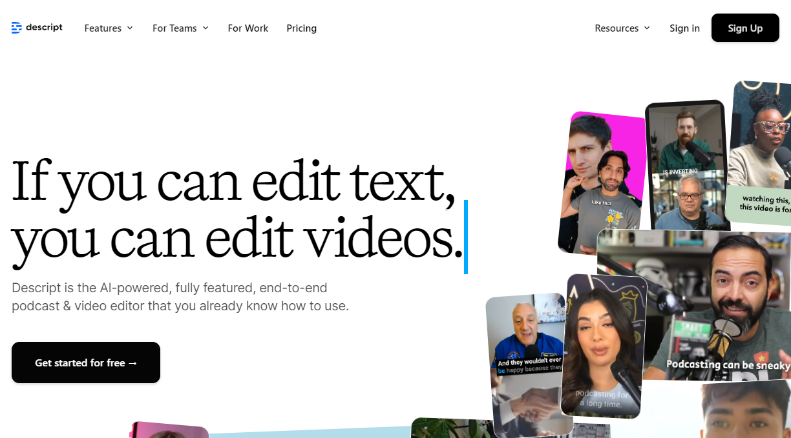
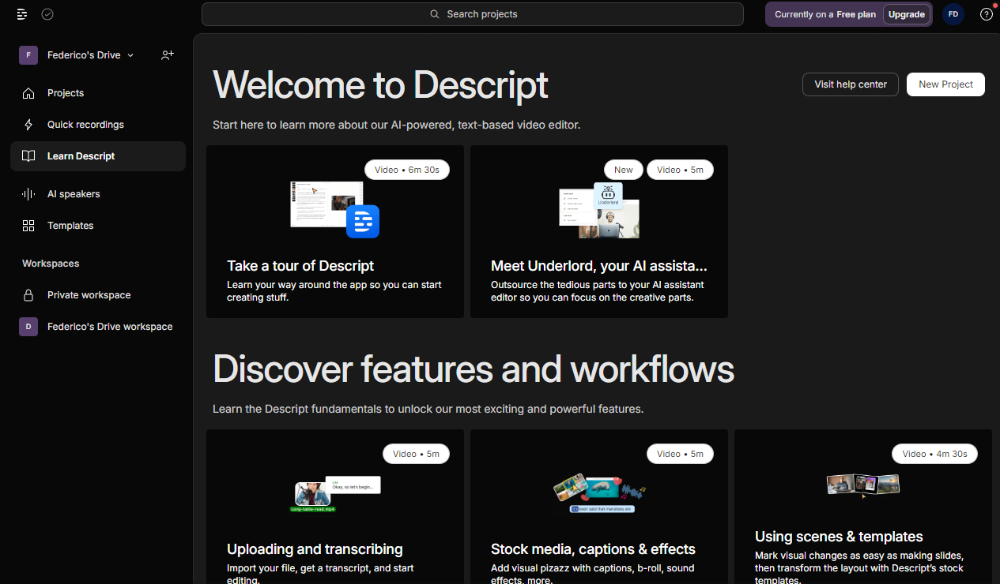

|  |
Descript è una piattaforma software avanzata per l'editing di audio e video, nota per la sua capacità di trascrizione automatica di file audio e video e di editing basato sul testo. Ciò significa che sarà possibile modificare il testo della trascrizione, manipolando automaticamente l'audio o il video corrispondente. Una caratteristica distintiva di Descript è Overdub, funzionalità che consente la creazione di registrazioni vocali sintetiche utilizzando la propria voce, sfruttabile per l'aggiunta o la correzione di porzioni di un dialogo. Descript supporta anche la collaborazione in tempo reale, permettendo a più utenti di lavorare insieme sullo stesso progetto e, una volta completato l'editing, i progetti potranno essere esportati in vari formati e condivisi su varie piattaforme. Descript rende, quindi, l'editing più efficiente e accessibile, adatto sia a professionisti che a principianti, facilitando il lavoro di podcaster, videomaker e altri creatori di contenuti. |
|  |